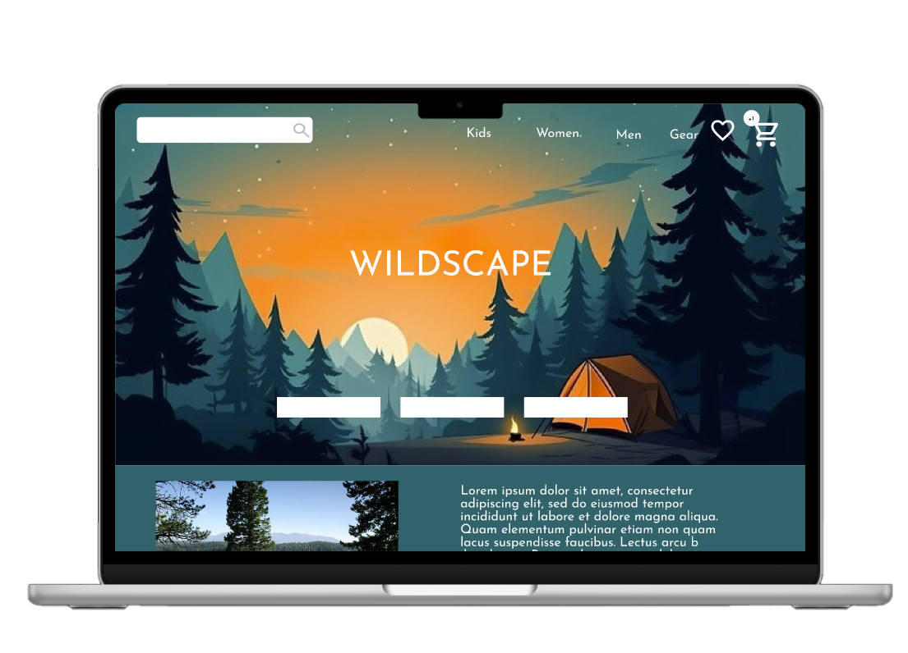
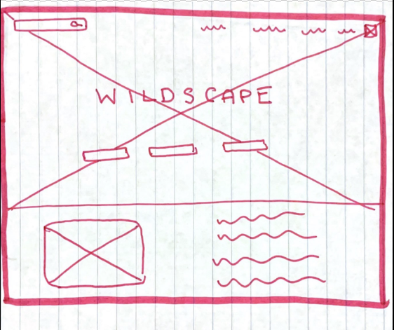
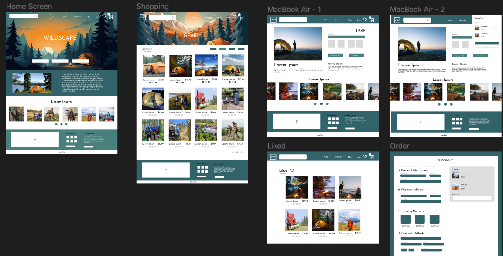
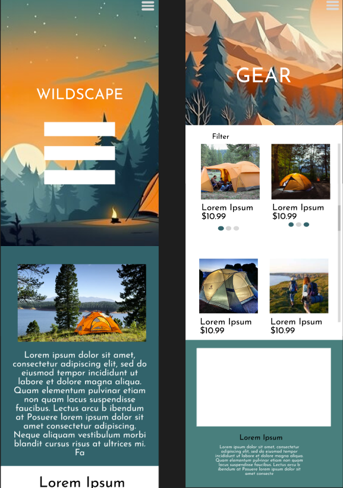
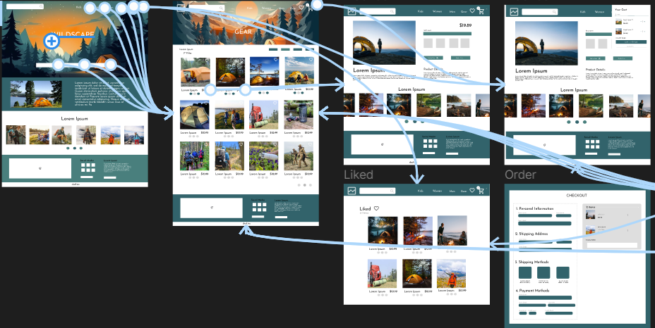

WILDSCAPE
The outdoor experience of camping flawlessly blends the beauty in nature with the joy of community, families come together to create lasting memories around crackling campfires surrounded by the bright stars and comforting outdoors. The prompt was to create a responsive website for a camping store to advertise and sell its products. For this project, I aimed to create a design that incorporated the emotions that camping encompasses while also ensuring functionality and easy navigation.
DESIGN PROCESS
I began by researching numerous other camping websites. Ensuring that my design was unique and provided solutions to issues found in other designs was essential to creating this. I found the target audience being middle aged adults and wanted to create a design that promoted accessibility and was visually appealing while being incredibly functional and efficient.
After researching several other camping brands and gathering information about what the focus of the website should be, I proceeded to create a low fidelity wireframe for each page of the website. Low fidelity wireframes allowed me to have iterative designs and provided a cost effective way of brainstorming several ideas.

Next, I transferred my vision onto Figma creating a high fidelity wireframe. This process allowed me to edit any obstacles that weren't feasible on an online interface. I was able to finalize shapes and create designs in which I could recieve feedback from users. I continued to research optimal colors and the best ways to organize content in order to create my prototypes. The user interface incorporated search bars and several icons to promote accessibility.
The next step was to create a prototype with color. I used hues of blues and greens to create the same natural environment that camping brings users. I added more icons and images that better informed users and showcased the final look of the product. The colors had high contrasts with the backgrounds in order to eliminate any difficulties users may have with reading text. The website also features a interactive map that would allow users to easily view in person locations of this camping store.
Responsive Design
The primary goal of this project was to increase my experience in creating responsive designs. Using my intial design for the Wildscape website for larger screens, I started to change icons to fit a smaller screensize using top down processing. I adjusted the nav bar to be a hamburger icon rather than links at the top of the page to fit the phone size better. Additionally, I changed image sizes and text placement in order to create maximum efficiency on a smaller phone size keeping users as my primary focus.
User Flow
Adding a user flow was essential to creating the most proficient user tests. The user flows enabled customers to click through the app as if it was a real app. I was able to approach issues for navigation and find solutions for them. This process allowed me to make sure that my icons, text, and images maximized efficiency and didn't slow users down. I also tested this design with family members and friends to prevent any issues from real users to identify user pain points. I created a list of user pain points and implemented solutions to them.
Takeaways and Additional Steps
Creating the high fidelity prototypes on Figma for these designs enabled me to improve my skills in Figma and user centered thinking. In the future, I would like to create more accessiblity imrovements and create a smoother flow between pages. I would like to continue user testing after development and involve engineers. In this UX design case study, my journey emphasized the transformative power of an iterative design process. From initial user research to wireframing and prototyping, each phase played a pivotal role in refining and enhancing the overall user experience. The key takeaway lies in the significance of user feedback—by consistently seeking and incorporating insights, I not only identified pain points but also uncovered opportunities for innovation. The iterative approach allowed me to adapt swiftly, ensuring that the final product resonates seamlessly with user expectations and preferences.